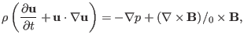
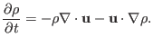

Next: Linearized ideal MHD equation Up: MHD equations Previous: Eliminating mass density from
For the convenience of reference, the MHD equations discussed above are
summarized here. The time evolution of the four quantities, namely
 ,
,
 ,
,  , and
, and  , are governed respectively by the
following four equations:
, are governed respectively by the
following four equations:
|  | (20) |
|  | (22) |